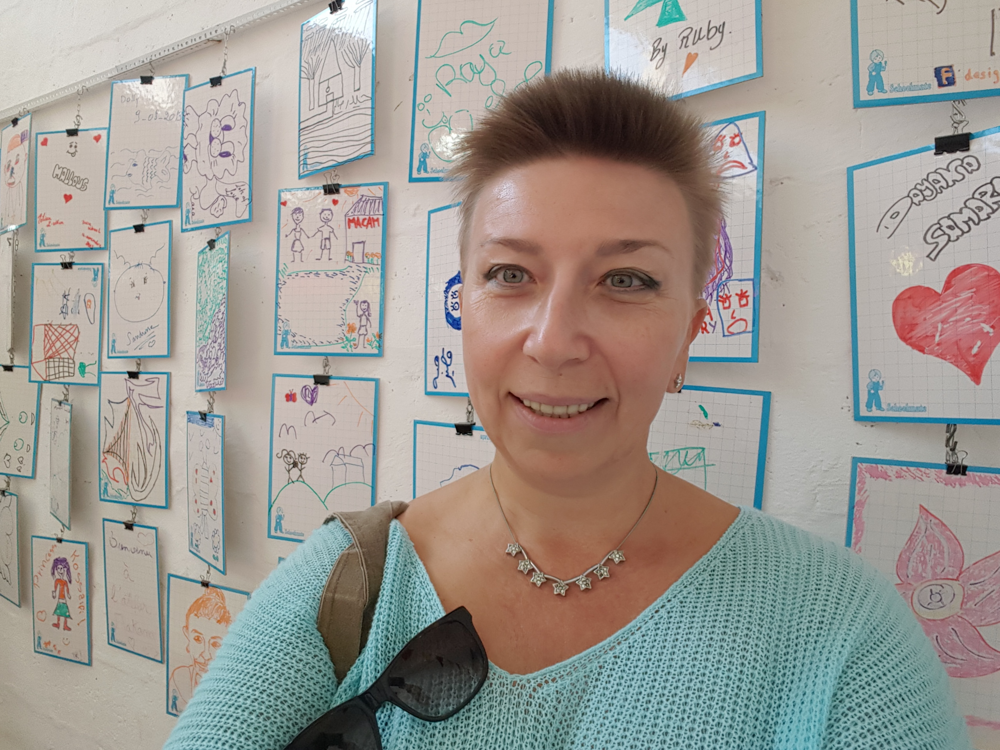

Coordination & Information Management Support Team
-
 Yukiko Koyama Senior Intersector Coordination Officer
Yukiko Koyama Senior Intersector Coordination OfficerYukiko is supporting the overall Refugee Response process. He leads the Intersector Working Group.
-
 Gorgui Niokhor Diouf Information Management Officer
Gorgui Niokhor Diouf Information Management OfficerGorgui is overviewing the configuration and development of the different information management systems used for the coordination. He's also co-charing the Information management Coordination group within MOPIC.
-

Elena Guseva Associate Inter-Sector Coordination Officer
Elena is the main support for the implementation of the needs assessment registry. She is also maintaining the Financial Tracking system for the Refugee Response process.
-
 Firas Alsagban Associate Information Management Officer
Firas Alsagban Associate Information Management OfficerFiras is supporting in creating maps and supporting GIS requests.
-
Murad Alsamhouri Associate Information Management Officer
Murad is the main support and administration for the ActivityInfo, Service Advisor and UNHCR web Portal. He is also maintaining the Financial Tracking system for the Refugee Response process.
-
 Maya Logo Associate Coordination Officer
Maya Logo Associate Coordination OfficerMajida is providing coordination support for the Protection and the Education Sectors.